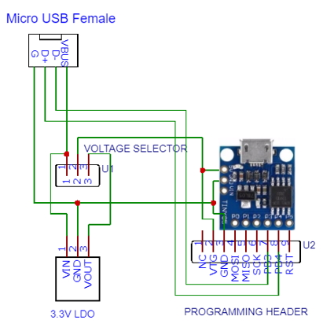
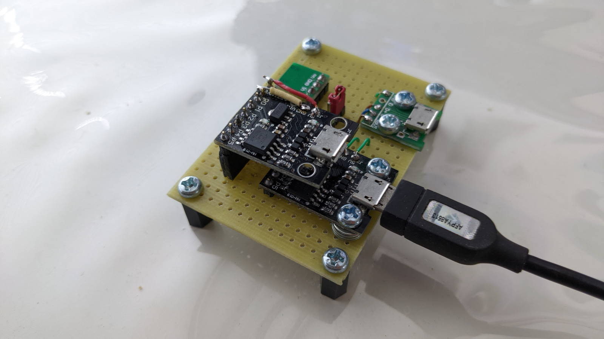

Having a standalone programmer is very useful when you need to burn a bootloader into eg. ATmega328P in an Arduino Pro Mini. You can also upload your sketch directly without a bootloader thus making an extra 2KB of flash available. While you can wire up a spare Pro Mini, upload the ArduinoISP sketch, and burn the bootloader into a target it's just handy to have a simple programmer ready for the job.

Schematic

This USBtinyISP-compatible AVR programmer uses a cheap ATTiny85 board from ebay to run the Little Wire firmware. It can supply 5V or 3.3V power to the target and supports 5V/3.3V signal levels on the SPI pins. The Arduino IDE has built-in support for the programmer. The ATTiny85 pins for connecting to target SPI are:
P0 MOSI
P1 MISO
P2 SCK
P5 RST
Connect 5V Arduino Pro Mini to USBtinyISP directly.

Connect 3.3V Arduino Pro Mini to USBtinyISP via logic level shifter.

Usage
To upload Arduino sketches in the IDE directly using the programmer,This gives you 32KB of flash available but it means the bootloader will be erased. You cannot subsequently click the Upload button to upload your sketch until you burn a new bootloader into the chip.
To burn a bootloader, select Tools -> Programmer -> USBtinyISP and click Burn Bootloader. Example of burning bootloader for a Arduino Pro Mini:
After the bootloader is burnt, remove the wiring between the programmer and target. Set Programmer to AVRISP mkII and click the Upload button to upload using COM1 serial port.
Software Download
Little Wire is multi-featured USB controlled Open Source Hardware tool packed in a minimal form factor designed by ihsan Kehribar. It features:- USBtinyISP-compatible AVR programmer
- 4 channel GPIO
- ADC with 10 bit resolution
- 2 parallel hardware PWM outputs
- SPI interface
- I2C interface
- 1-Wire interface
- WS2812 RGB LED interface
| ATTiny USB bootloader | Micronucleus V2.04 |
| Little Wire Firmware | Little Wire v1.3 |
| Windows Driver(64bit) | littleWire_win_driver_64bit |
Installation in Windows
Unzip the Micronucleus and Little Wire files into a folder eg. C:\Temp.A chicken-and-egg situation here: in order to build the programmer, you must first program t85_default.hex into the ATTiny85 chip. The quickest way is ask someone with a programmer for help. A slightly more tedious way - wire up Arduino as ISP one last time and burn with command eg:
avrdude -carduino -PCOM4 -b57600 -p t85 -U flash:w:temp\micronucleus\firmware\releases\t85_default.hex -U lfuse:w:0xe1:m -U hfuse:w:0x5d:m -U efuse:w:0xfe:m
Note:
- If the ATTiny85 has RSTDISBL fuse set, the above command will fail. This can happen if P5 is enabled as a GPIO pin. The Digispark ATTiny85 dev board provides 6 GPIO pins using this method.
- If you can burn the micronucleus, the RSTDISBL fuse WILL be set so there is no going back. You cannot even read the fuses again to verify the settings, it is as good as bricked.
- But you can use High Voltage Serial Programming (HVSP) with AVR Dragon programmer or open source tool to reset the RSTDISBL fuse.
Rightclick Unknown device -> Update driver -> browse to Temp\micronucleus\windows_driver and install driver. Next, upload the Little Wire v1.3 firmware using micronucleus commandline application:
micronucleus.exe littlewire_v13.hex
Finally, rightclick USBtinySPI -> Update driver -> browse to Temp\Little-Wire\littleWire_win_driver_64bit\littleWire_driver and install driver. In Device Manager, you should get:
If the device drivers do not load, run the tool Temp\micronucleus\windows_driver_installer\zadig_2.1.2.exe:
- Select Options -> List All Devices
- Select USBtinySPI
- Select libusb-win32
- Click Install Driver
Note: libusb-win32 driver supports only 1 application at a time. If the driver is in use by another application, it will be deregistered in favour of USBtinySPI. To restore the original application, reinstall libusb for it using Zadig.
ATTinyCore(optional)
The ATTinyCore supports the Atmel 1634, x313, x4, x41, x5, x61, x7, x8 and 828 for Arduino 1.6.5 and later. Install this if you wish to develop programs using the Arduino framework(instead of Little Wire's library). Refer to Github ATTinyCore for installation details. Use the Boards Manager Installation option for simplest method. Once installed, Tools -> Board will contain:Note, you will need to burn the appropriate bootloader first before uploading your sketch. This is where the USBtinyISP earns its keep.
Latest Update
Instead of using a logic level shifter, step the USB 5V down to 3.3V using a regulator and connect it to the 5V input pin of the ATTiny85 board. The data lines D+/D- are connected to the ATTiny85 from a female micro USB breakout board. You can switch between 5V and 3.3V supply using a header shunt thus enabling 5V or 3.3V devices to be programmed directly. I have decided to upload ATTINY85 sketches using USBtinyISP instead of bootloader to maximise available flash and ram. All my devices have the RSTDISBL fuse cleared(enabling PB5 for RESET and not GPIO) using HVSP on my AVR Dragon.
